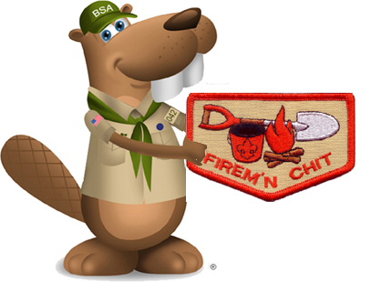

Firem'n Chit

Note: The Firem'n Chit patch is considered a 'Temporary Patch' and, if worn, should be worn centered on the RIGHT pocket of the Scouts BSA uniform, NOT on the pocket flap. It is acceptable tp place this on the back of the sash, if desired.Building a campfire is a crucial skill for scouting. Not only is it a real-world survival technique, but sitting around the fire is a great way to get to know your fellow scouts and make life-long friendships. Fires can be used for cooking, for fellowship and for warmth. There are many ways to start a fire, but no matter how the fire is started, it's important to practice good fire safety.
The Firem’n Chit is a contract for Scouts who have demonstrated the proper procedures for starting, maintaining, and extinguishing lighting devices, cooking fires, campfires, and lanterns to uphold these safe practices.
Firem'n Chit Award
Certification grants a Scout the right to carry matches and build campfires. Scouts must show their Scout leader, or someone designated by their leader, that they understand their responsibility to do the eight requirements.
The Scout’s "Firem’n Rights" can be taken if they fail in their responsibility. Typically, corners are cut from the Firem’n Chit card for each infraction. If four corners are cut away or a Scout conducts a serious infraction with fire, the card is taken away. Scouts will have to re-earn thier Firem'n Chit by re-taking Firem'n Chit training from a senior scout or adult leader.

Firem'n Chit Requirements
To earn the Friem'n Chit certification, the Scout must show their Scout leader, or someone designated by their leader, an understanding of the responsibility to do the following:
1.
I have read and understand use and safety rules from the Scouts BSA Handbook.
2.
I will build a campfire only when necessary and when I have the necessary permits (regulations vary by locality).
3.
I will minimize campfire impacts or use existing fire lays consistent with the principles of Leave No Trace. I will check to see that all flammable material is cleared at least 5 feet in all directions from fire (total 10 feet).
4.
I will safely use and store fire-starting materials.
5.
I will see that fire is attended to at all times.
6.
I will make sure that water and/or a shovel is readily available. I will promptly report any wildfire to the proper authorities.
7.
I will use the cold-out test to make sure the fire is cold out and will make sure the fire lay is cleaned before I leave it.
8.
I follow the Outdoor Code, the Guide to Safe Scouting, and the principles of Leave No Trace and Tread Lightly!
Firem'n Chit – Forms, Links, and Resources
Unit Fireguard Plan exerpt from BALOO training book